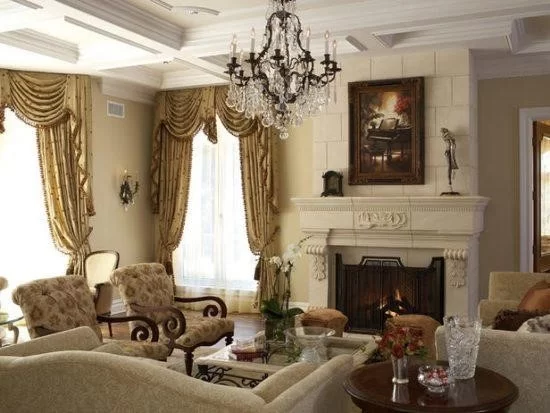

Traditional Interior Designing Style
Here the design has touch from our old classic. The use of wooden furniture’s with the style used by the traditional craftsmen is one of its elements. The style is also known as the old school European style.
Elements in Traditional Design:
- Here the interiors include wood paneling and molding with elaboration
- This brings out the beauty of classic European decor
- Antique pieces are used in designing
- The tiles used over here are of velvet or silk touch
- Colors used are sober and classy
- It uses the metal accent pieces.
